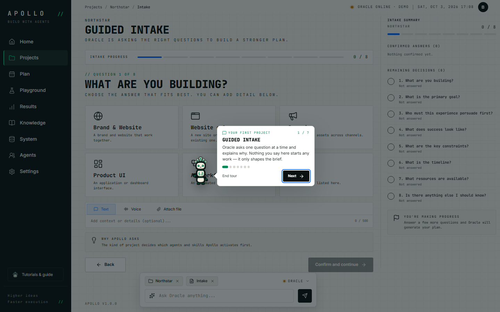
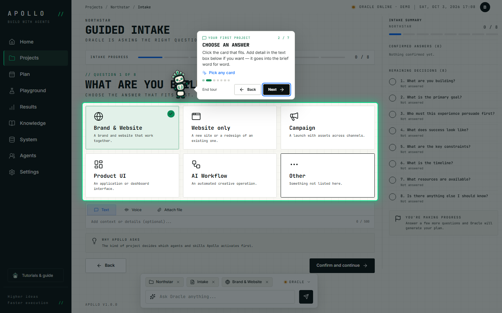
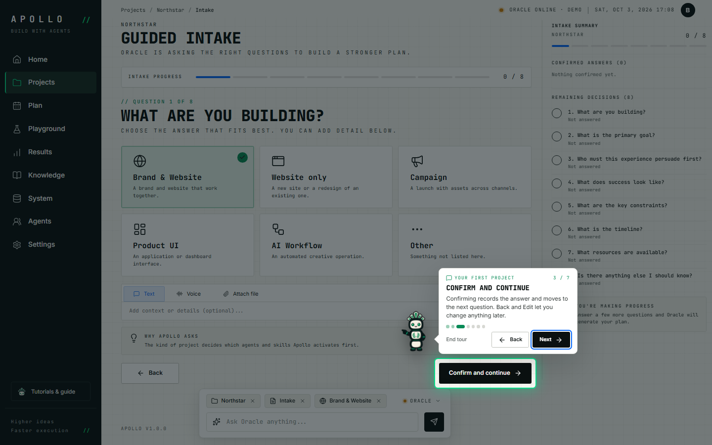
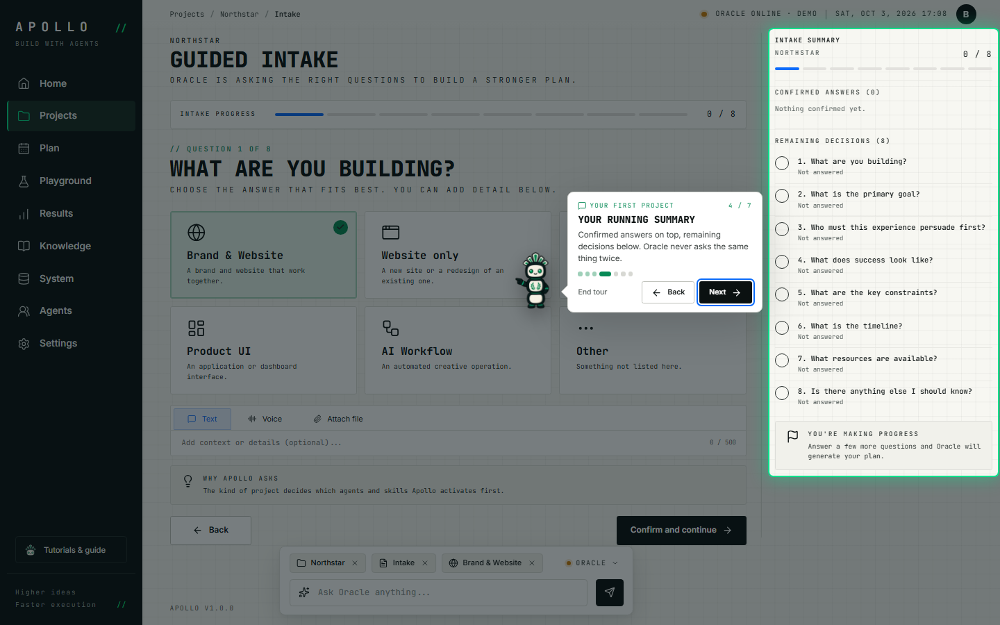
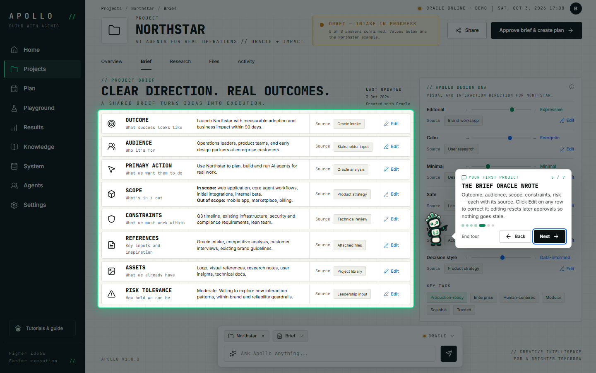
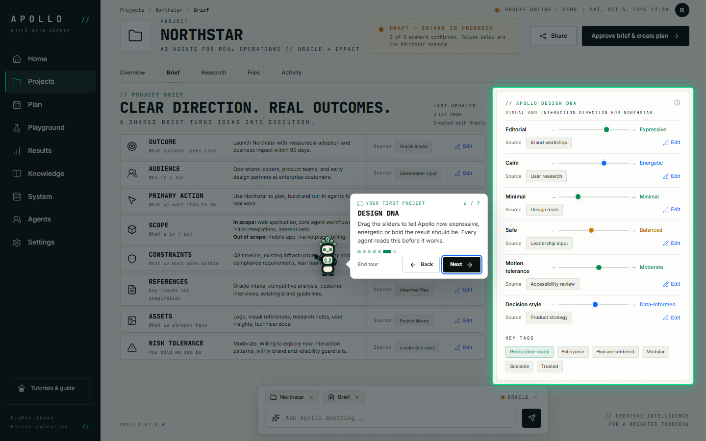
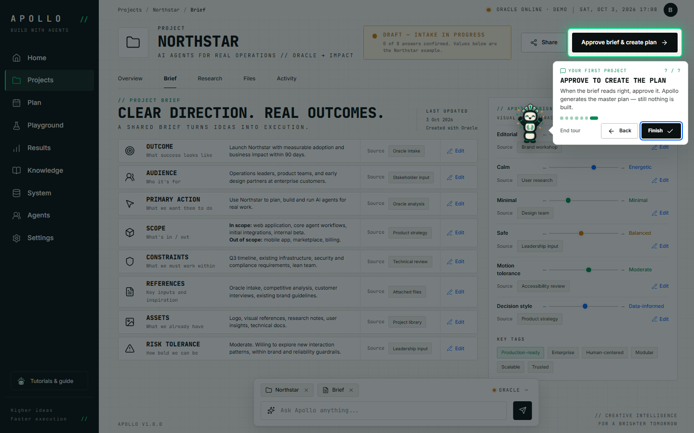

Recorded automatically with Playwright on a scratch copy of the data.
- 01

Guided intake
Oracle asks one question at a time and explains why. Nothing you say here starts any work — it only shapes the brief.
Screen:
#/projects/northstar/intake
- 02

Choose an answer
Click the card that fits. Add detail in the text box below if you want — it goes into the brief word for word.
→ Pick any card
Screen:
#/projects/northstar/intake
- 03

Confirm and continue
Confirming records the answer and moves to the next question. Back and Edit let you change anything later.
Screen:
#/projects/northstar/intake
- 04
Your running summary
Confirmed answers on top, remaining decisions below. Oracle never asks the same thing twice.
Screen:
#/projects/northstar/intake
- 05
The brief Oracle wrote
Outcome, audience, scope, constraints, risk — each with its source. Click Edit on any row to correct it; editing resets later approvals so nothing goes stale.
Screen:
#/projects/northstar/brief
- 06
Design DNA
Drag the sliders to tell convenium.design how expressive, energetic or bold the result should be. Every agent reads this before it works.
Screen:
#/projects/northstar/brief
- 07

Approve to create the plan
When the brief reads right, approve it. convenium.design generates the master plan — still nothing is built.
Screen:
#/projects/northstar/brief